<title>TextFox Designretninger</title>
<meta name="claude:viewport-fit-sides" content="cover">
<link rel="preconnect" href="https://fonts.googleapis.com">
<link rel="preconnect" href="https://fonts.gstatic.com" crossorigin>
<link rel="stylesheet" href="https://fonts.googleapis.com/css2?family=DM+Sans:opsz,wght@9..40,300..700&family=JetBrains+Mono:wght@400..700&display=swap">
<style>
/* Layout: design board. Four full-width concept rows (screens left, verdict right), then recommendation, logo, phase-2 plan, open questions. */
:root{
  --ink:#090B0A; --ink-2:#0F1311; --card:#121815; --line:rgba(214,255,232,.10); --line-2:rgba(214,255,232,.18);
  --fg:#EEF3EF; --mute:#9AA79F; --dim:#5F6C65;
  --green:#00E676; --amber:#FFB300; --teal:#42D1CA; --rose:#FF5C8A; --red:#FF6B6B;
  --sans:"DM Sans", ui-sans-serif, system-ui, -apple-system, "Segoe UI", sans-serif;
  --mono:"JetBrains Mono", ui-monospace, SFMono-Regular, Menlo, Consolas, monospace;
  color-scheme:dark;
}
*{box-sizing:border-box}
body{background:var(--ink);color:var(--fg);font:400 16px/1.6 var(--sans);-webkit-font-smoothing:antialiased;margin:0}
a{color:inherit}
:focus-visible{outline:2px solid var(--green);outline-offset:3px;border-radius:6px}
.wrap{max-width:1200px;margin-inline:auto;padding-left:max(16px, env(safe-area-inset-left, 0px));padding-right:max(16px, env(safe-area-inset-right, 0px))}
.mono{font-family:var(--mono)}
.k{font:500 12px/1 var(--mono);letter-spacing:.12em;text-transform:uppercase;color:var(--green);margin:0 0 14px}

header{border-bottom:1px solid var(--line)}
header .wrap{display:flex;justify-content:space-between;align-items:center;padding-block:18px;gap:16px}
.brand{display:flex;align-items:center;gap:10px;font:500 18px/1 var(--mono);letter-spacing:-.02em}
.brand svg{width:28px;height:28px;color:var(--green)}
header span{font:500 12px/1 var(--mono);color:var(--dim)}

.intro{padding-block:72px 40px}
.intro h1{font:700 clamp(40px,6.4vw,84px)/.96 var(--sans);letter-spacing:-.045em;margin:0 0 22px;max-width:14ch;text-wrap:balance}
.intro h1 em{font-style:normal;color:var(--green)}
.intro p{color:var(--mute);max-width:62ch;margin:0 0 26px;font-size:18px}
.dna{display:flex;flex-wrap:wrap;gap:8px}
.dna span{display:inline-flex;align-items:center;gap:8px;font:500 12.5px/1 var(--mono);color:var(--mute);border:1px solid var(--line);border-radius:999px;padding:9px 12px}
.dna i{width:10px;height:10px;border-radius:50%}

.concept{display:grid;grid-template-columns:minmax(0,1.25fr) minmax(0,1fr);gap:48px;padding-block:56px;border-top:1px solid var(--line);align-items:start}
.shots{position:relative;padding-bottom:12%}
.shots img{display:block;width:100%;height:auto;border-radius:14px;border:1px solid var(--line-2);background:var(--ink-2)}
.shots .main{aspect-ratio:16/10;object-fit:cover}
.shots .moment{position:absolute;width:62%;right:-3%;bottom:0;aspect-ratio:16/10;object-fit:cover;box-shadow:0 30px 70px -20px rgba(0,0,0,.85)}
.shots .mob{position:absolute;width:19%;left:4%;bottom:-2%;aspect-ratio:390/844;object-fit:cover;border-radius:18px;box-shadow:0 30px 60px -20px rgba(0,0,0,.85)}
.num{font:300 64px/1 var(--mono);letter-spacing:-.06em;color:var(--dim);margin:0 0 6px}
.concept h2{font:700 clamp(30px,3.4vw,44px)/1.02 var(--sans);letter-spacing:-.035em;margin:0 0 10px}
.concept h2 small{display:block;font:500 13px/1.4 var(--mono);letter-spacing:0;color:var(--mute);margin-top:8px}
.thesis{font-size:18px;color:var(--fg);margin:14px 0 22px}
dl{margin:0 0 22px;display:grid;gap:14px}
dt{font:500 11.5px/1 var(--mono);letter-spacing:.12em;text-transform:uppercase;color:var(--dim);margin-bottom:5px}
dd{margin:0;color:#CBD5CF;font-size:15px}
.pc{display:grid;grid-template-columns:1fr 1fr;gap:10px;margin-bottom:24px}
.pc div{border-radius:14px;padding:14px 16px;font-size:14px;line-height:1.5;background:var(--card);border:1px solid var(--line)}
.pc b{display:block;font:600 11.5px/1 var(--mono);letter-spacing:.1em;text-transform:uppercase;margin-bottom:8px}
.pc .pro b{color:var(--green)}.pc .con b{color:var(--red)}
.open{display:inline-flex;align-items:center;gap:10px;background:var(--green);color:#03140A;text-decoration:none;font:600 15px/1 var(--sans);border-radius:999px;padding:14px 20px;transition:transform .2s}
.open:hover{transform:translateY(-2px)}
.open.rec{box-shadow:0 0 0 4px rgba(0,230,118,.18)}
.tag{display:inline-block;font:600 11px/1 var(--mono);letter-spacing:.08em;text-transform:uppercase;color:#03140A;background:var(--green);border-radius:6px;padding:6px 8px;margin-left:10px;vertical-align:middle}

.rec-band{margin-block:24px 0;border-radius:32px;padding:clamp(28px,5vw,64px);background:radial-gradient(90% 120% at 100% 0%,rgba(0,230,118,.18),transparent 55%),radial-gradient(80% 100% at 0% 100%,rgba(255,179,0,.12),transparent 60%),var(--ink-2);border:1px solid var(--line-2)}
.rec-band h2{font:700 clamp(32px,4.6vw,60px)/1 var(--sans);letter-spacing:-.04em;margin:0 0 18px;max-width:18ch;text-wrap:balance}
.rec-band > p{color:var(--mute);max-width:64ch;margin:0 0 32px;font-size:17px}
.flow{list-style:none;padding:0;margin:0 0 32px;display:grid;gap:10px}
.flow li{display:grid;grid-template-columns:120px 1fr;gap:18px;align-items:baseline;padding:16px 18px;border-radius:16px;background:rgba(0,0,0,.25);border:1px solid var(--line)}
.flow li span{font:500 12px/1.3 var(--mono);color:var(--green)}
.flow li b{font-weight:600}
.flow li p{margin:4px 0 0;color:var(--mute);font-size:14.5px}
.drop{display:grid;grid-template-columns:1fr 1fr;gap:14px}
.drop div{padding:18px;border-radius:16px;border:1px dashed var(--line-2);font-size:14.5px;color:#CBD5CF}
.drop b{display:block;font:600 11.5px/1 var(--mono);letter-spacing:.1em;text-transform:uppercase;color:var(--amber);margin-bottom:8px}

.sec{padding-block:72px 0}
.sec h2{font:700 clamp(28px,3.6vw,44px)/1.05 var(--sans);letter-spacing:-.035em;margin:0 0 14px}
.sec > .wrap > p{color:var(--mute);max-width:62ch;margin:0 0 28px}
.logo{display:grid;grid-template-columns:auto auto auto 1fr;gap:28px;align-items:center;padding:28px;border-radius:24px;background:var(--card);border:1px solid var(--line)}
.logo svg{display:block}
.logo .wm{font:500 44px/1 var(--mono);letter-spacing:-.04em}
.logo p{margin:0;color:var(--mute);font-size:14.5px;max-width:42ch}
.cols{display:grid;grid-template-columns:repeat(3,minmax(0,1fr));gap:14px}
.col{padding:24px;border-radius:20px;background:var(--card);border:1px solid var(--line)}
.col h3{font:600 18px/1.2 var(--sans);margin:0 0 14px;display:flex;align-items:center;gap:10px}
.col h3 i{width:9px;height:9px;border-radius:50%;background:var(--c)}
.col ul{margin:0;padding-left:18px;color:#CBD5CF;font-size:14.5px;display:grid;gap:8px}
.col code{font:500 12.5px/1 var(--mono);color:var(--c)}
.qs{counter-reset:q;list-style:none;padding:0;margin:0;display:grid;gap:10px}
.qs li{counter-increment:q;display:grid;grid-template-columns:44px 1fr;gap:12px;padding:16px 18px;border-radius:16px;background:var(--card);border:1px solid var(--line)}
.qs li::before{content:counter(q);font:500 22px/1 var(--mono);color:var(--green)}
.qs b{font-weight:600}
.qs p{margin:4px 0 0;color:var(--mute);font-size:14.5px}
footer{margin-top:80px;border-top:1px solid var(--line)}
footer .wrap{padding-block:24px;font:400 12.5px/1.5 var(--mono);color:var(--dim);display:flex;flex-wrap:wrap;gap:12px;justify-content:space-between}

@media (max-width:900px){
  .concept{grid-template-columns:1fr;gap:28px}
  .cols{grid-template-columns:1fr}
  .logo{grid-template-columns:auto 1fr;gap:20px}
  .logo .wm{font-size:32px}
  .logo p{grid-column:1/-1}
}
@media (max-width:560px){
  .pc,.drop{grid-template-columns:1fr}
  .flow li{grid-template-columns:1fr;gap:6px}
  .shots .mob{display:none}
  .shots .moment{width:70%;right:-2%}
}
</style>

<svg width="0" height="0" style="position:absolute" aria-hidden="true">
  <symbol id="fox" viewBox="0 0 64 64"><path d="M5 3 23 16.5h18L59 3l1.5 21L64 33 37.2 55.6a8 8 0 0 1-10.4 0L0 33l3.5-9Z" fill="currentColor"/><path d="M0 33 18 38l14 18.6L46 38l18-5-26.8 22.6a8 8 0 0 1-10.4 0Z" fill="#EAF7EF"/><circle cx="22" cy="30" r="3.5" fill="#090B0A"/><circle cx="32" cy="30" r="3.5" fill="#090B0A"/><circle cx="42" cy="30" r="3.5" fill="#090B0A"/></symbol>
</svg>

<header><div class="wrap">
  <div class="brand"><svg aria-hidden="true"><use href="#fox"/></svg>textfox</div>
  <span>designretninger · fase 1 · textfox.app</span>
</div></header>

<main>
<section class="intro"><div class="wrap">
  <p class="k">// 4 bud på landingssiden</p>
  <h1>Fire måder at sige <em>"din telefon skriver for dig"</em>.</h1>
  <p>Hver retning er en rigtig prototype med scroll-effekterne indbygget. Åbn dem og scroll, gerne både på computer og mobil. Alle fire er bygget i appens eget design, men fortæller historien på hver sin måde.</p>
  <div class="dna" aria-label="Fælles design-DNA fra appen">
    <span><i style="background:var(--green)"></i>#00E676 primær</span>
    <span><i style="background:var(--amber)"></i>amber · planlagt</span>
    <span><i style="background:var(--teal)"></i>teal · AI og svar</span>
    <span>DM Sans + JetBrains Mono</span>
    <span>&gt; terminal-labels</span>
    <span>kornet mørk baggrund</span>
  </div>
</div></section>

<section class="wrap">
  <article class="concept" id="c1">
    <div class="shots">
      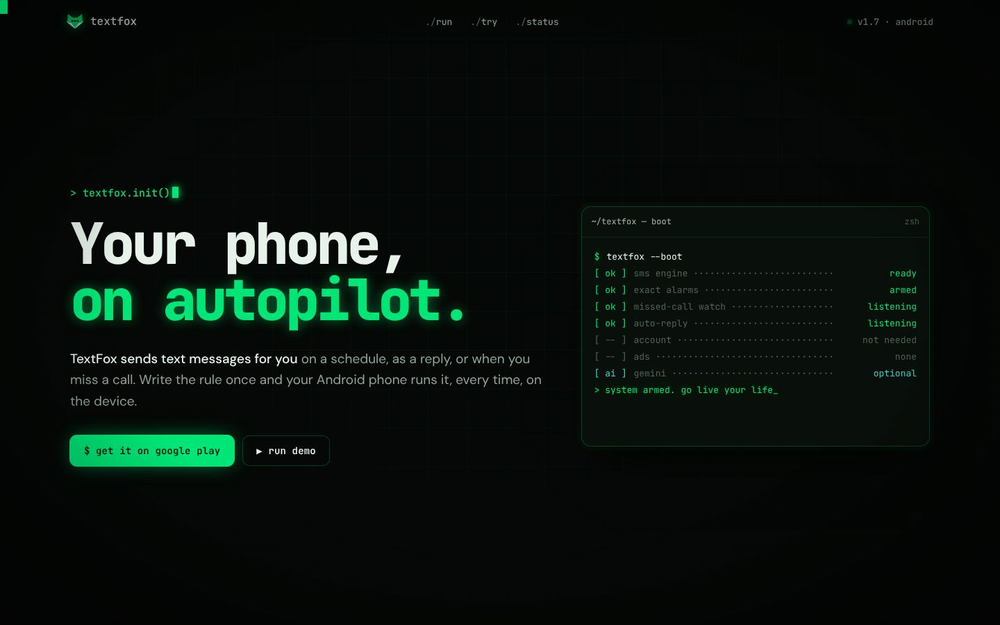
      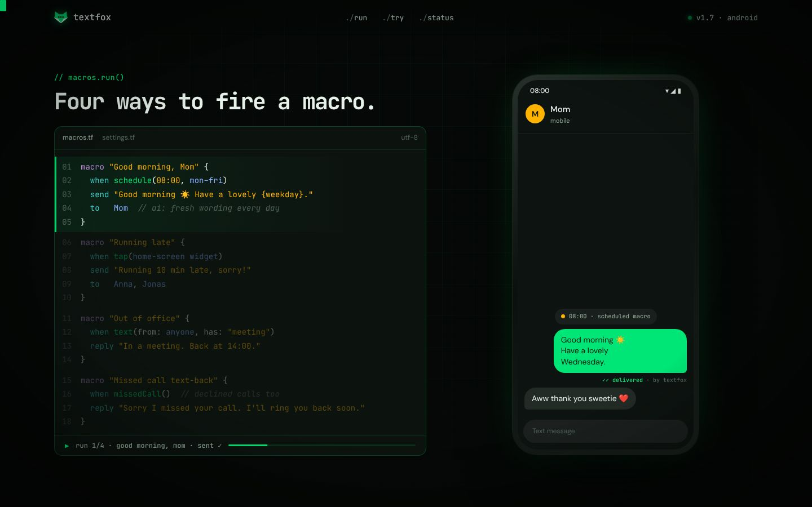
      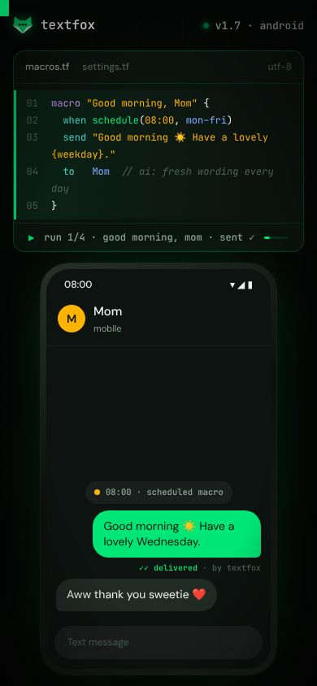
    </div>
    <div>
      <p class="num">01</p>
      <h2>Terminal<small>boot sequence · siden er et program, der kører</small></h2>
      <p class="thesis">Overskriften dekrypteres, en boot-log printer, og fire macros eksekveres linje for linje, mens du scroller. Til venstre står koden, og til højre viser telefonen resultatet.</p>
      <dl>
        <div><dt>Det forstår man på 5 sek.</dt><dd>Du skriver reglen én gang, og telefonen udfører den.</dd></div>
        <div><dt>Overraskelsen</dt><dd>Skriv selv en regel med almindelige ord, fx "text mom good morning every weekday at 8". Siden kompilerer den live til et macro-kort med det rigtige næste tidspunkt.</dd></div>
        <div><dt>Scroll</dt><dd>Fastlåst editor og telefon i 4 trin, overskrifter der "scrambler" ind, blok-cursor der følger musen.</dd></div>
      </dl>
      <div class="pc"><div class="pro"><b>Styrker</b>Mest unik. Nørdet charme, der passer til Product Hunt og Reddit. Compileren er sjov at dele.</div><div class="con"><b>Risici</b>Kode-æstetik kan skræmme ikke-tekniske brugere, og mono-tekst er tungere at læse.</div></div>
      <a class="open" href="01-boot.html">Åbn prototype 01 →</a>
    </div>
  </article>

  <article class="concept" id="c2">
    <div class="shots">
      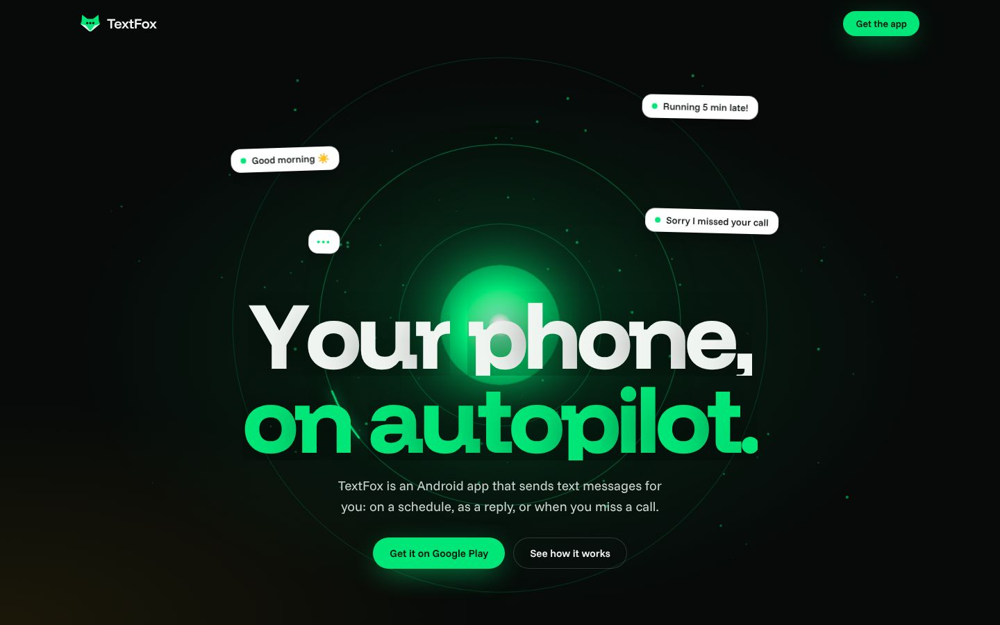
      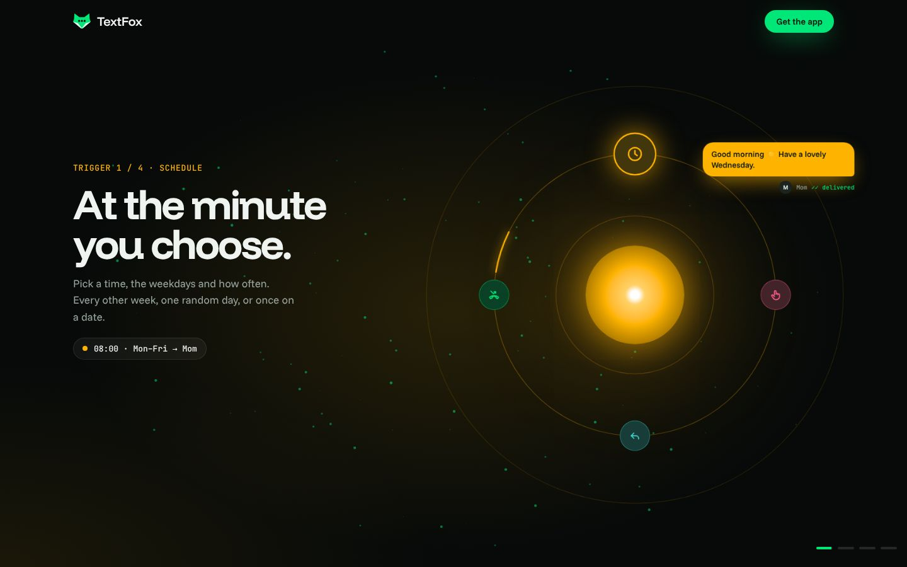
      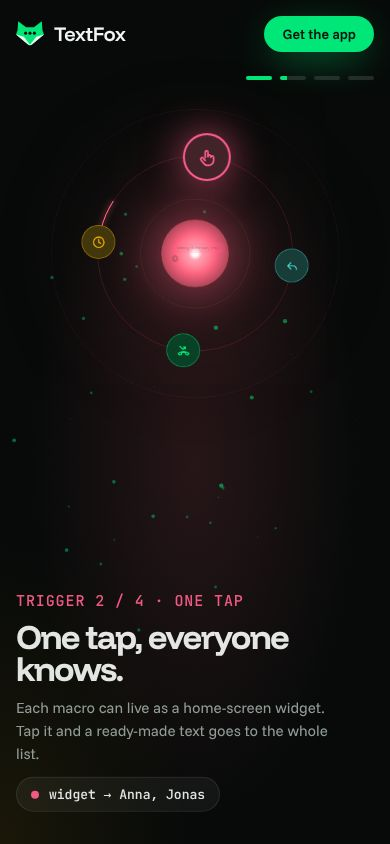
    </div>
    <div>
      <p class="num">02</p>
      <h2>Orbit<small>cinematic · appens onboarding i scenestørrelse</small></h2>
      <p class="thesis">Kernen er din telefon, og de fire triggere kredser om den. Mens du scroller, drejer hver trigger ind på kl. 12, hele scenen skifter farve, og en besked skydes ud til modtageren.</p>
      <dl>
        <div><dt>Det forstår man på 5 sek.</dt><dd>Telefonen er i centrum og sender beskeder ud. Stemningen er Apple-keynote.</dd></div>
        <div><dt>Overraskelsen</dt><dd>Farveskift pr. trigger (amber, pink, teal, grøn), partikler der følger med, og bobler og knapper der trækkes mod musen.</dd></div>
        <div><dt>Scroll</dt><dd>Ét langt fastlåst forløb på 5,5 skærmhøjder, telefonen med macro-listen folder sig ud, og toggles slår til, mens du scroller.</dd></div>
      </dl>
      <div class="pc"><div class="pro"><b>Styrker</b>Visuelt stærkest og mest premium. Tro mod den onboarding, brugerne møder i appen.</div><div class="con"><b>Risici</b>Mere stemning end forklaring. Tungest at køre glat på billige Android-telefoner, som er målgruppens telefoner.</div></div>
      <a class="open" href="02-orbit.html">Åbn prototype 02 →</a>
    </div>
  </article>

  <article class="concept" id="c3">
    <div class="shots">
      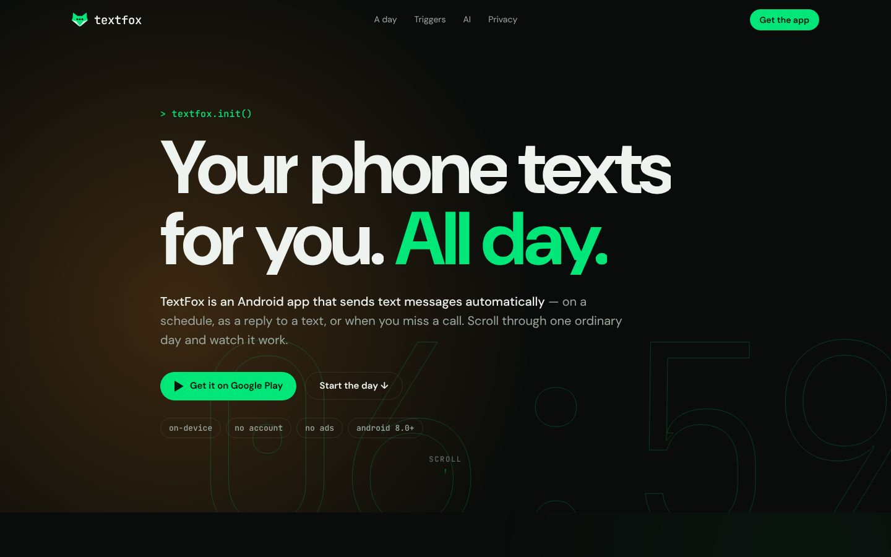
      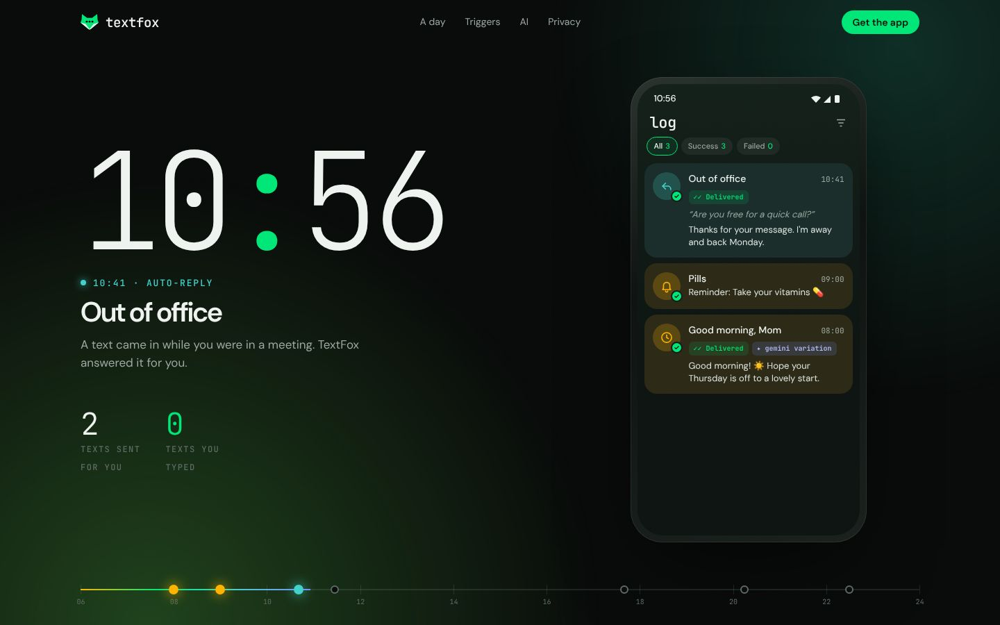
      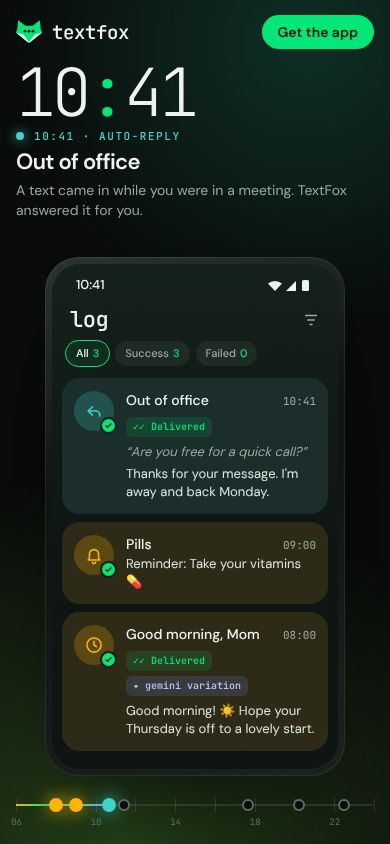
    </div>
    <div>
      <p class="num">03</p>
      <h2>Døgnet <span class="tag">min favorit</span><small>a day on autopilot · scroll er tid</small></h2>
      <p class="thesis">Ét almindeligt døgn fra 06:59 til 23:00. Uret løber med din scroll, himlen skifter fra daggry til nat, og telefonens log fyldes med det, TextFox sendte.</p>
      <dl>
        <div><dt>Det forstår man på 5 sek.</dt><dd>Hurtigst af alle fire. Efter tre scroll har man set en planlagt sms, et auto-svar og en sms efter et ubesvaret opkald, med rigtige klokkeslæt.</dd></div>
        <div><dt>Overraskelsen</dt><dd>Tælleren "texts sent for you: 5 · texts you typed: 0" og himlen, der følger klokken. Uret sætter farten ned og holder ved hver hændelse.</dd></div>
        <div><dt>Scroll</dt><dd>Fastlåst scene over 6,5 skærmhøjder, scrubbet ur med holdepunkter, 24-timers tidslinje, ord-reveal og et panel der folder sig ud.</dd></div>
      </dl>
      <div class="pc"><div class="pro"><b>Styrker</b>Bedst til at forklare kernefunktionen. Bruger præcis appens fonte og genskaber log-skærmen. Let at holde hurtig.</div><div class="con"><b>Risici</b>Lineær fortælling. Den utålmodige ser oversigten over triggere først efter scenen. Kan løses med en genvej i hero.</div></div>
      <a class="open rec" href="03-day.html">Åbn prototype 03 →</a>
    </div>
  </article>

  <article class="concept" id="c4">
    <div class="shots">
      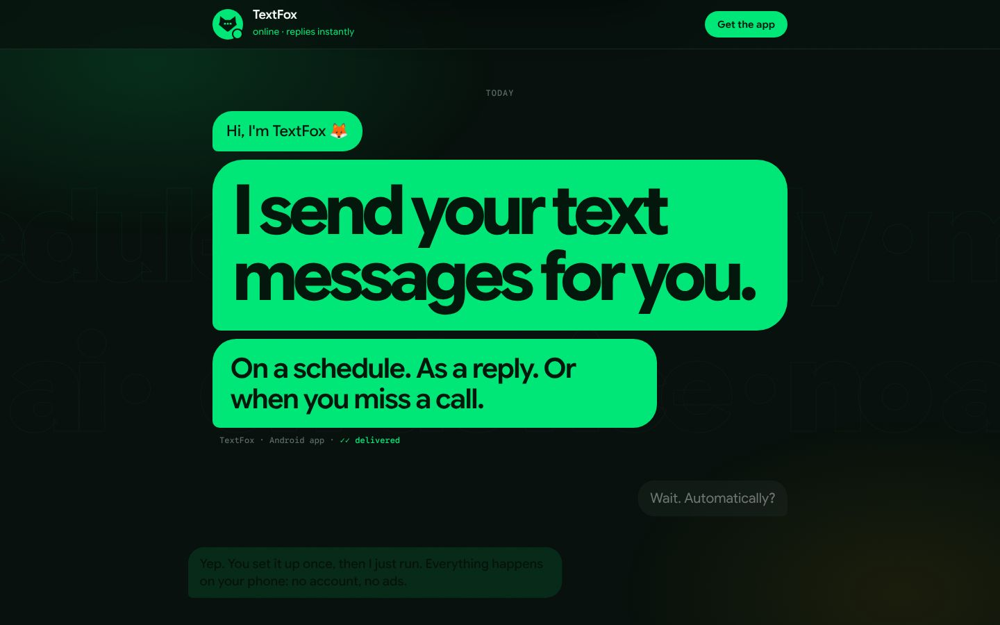
      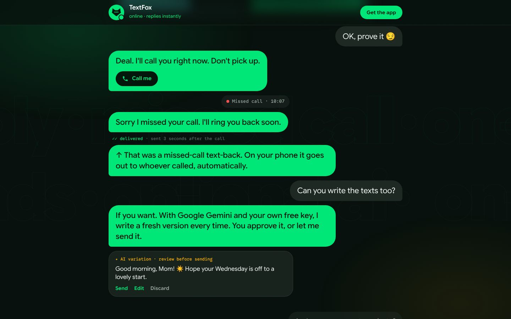
      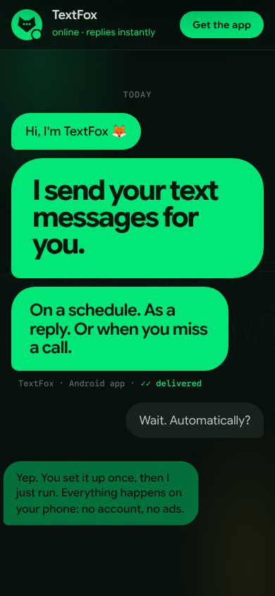
    </div>
    <div>
      <p class="num">04</p>
      <h2>Tråden<small>the thread · hele sitet er en samtale</small></h2>
      <p class="thesis">Hele siden er en sms-tråd med TextFox. Siden skriver til dig, svarer dig og demonstrerer produktet på dig.</p>
      <dl>
        <div><dt>Det forstår man på 5 sek.</dt><dd>Det her er en app, der skriver beskeder for dig. Selve formatet er budskabet.</dd></div>
        <div><dt>Overraskelsen</dt><dd>Siden ringer dig op. Afviser du, kommer der 3 sekunder senere en "Sorry I missed your call"-besked i tråden. FAQ-knapperne og inputfeltet er et rigtigt keyword-auto-svar.</dd></div>
        <div><dt>Scroll</dt><dd>Hver boble glider ind fra sin side i takt med din scroll, og baggrundsteksten reagerer på scroll-hastigheden.</dd></div>
      </dl>
      <div class="pc"><div class="pro"><b>Styrker</b>Sjovest og mest delbar. FAQ'en er spørgsmål-svar i rigtig tekst, hvilket er ideelt til AI-søgning (AEO).</div><div class="con"><b>Risici</b>Mindre visuelt "wow" og mere tekst. Opkaldet må ikke føles påtrængende, så det ringer kun én gang.</div></div>
      <a class="open" href="04-thread.html">Åbn prototype 04 →</a>
    </div>
  </article>
</section>

<section class="wrap">
  <div class="rec-band">
    <p class="k">// mit bud på noget endnu bedre</p>
    <h2>03 som rygrad med tre stjålne øjeblikke.</h2>
    <p>Målgruppen er almindelige Android-brugere, ikke udviklere. Derfor skal forklaringen komme før stemningen, men vi beholder de tre øjeblikke, folk husker og deler.</p>
    <ol class="flow">
      <li><span>hero</span><div><b>03's klare budskab med 02's orbit som brand-anker</b><p>"Your phone texts for you. All day." med en lille, let orbit bag overskriften og tre trigger-genveje, så den utålmodige straks ser, hvad appen kan.</p></div></li>
      <li><span>kerne</span><div><b>Døgn-scenen fra 03</b><p>Uret, himlen og log-skærmen. Det er den hurtigste vej til at forstå appen.</p></div></li>
      <li><span>interaktivt</span><div><b>"Skriv din egen macro" fra 01</b><p>Compileren gør det abstrakte konkret og er det, folk skærmdumper og deler.</p></div></li>
      <li><span>finale</span><div><b>Opkaldet og keyword-FAQ'en fra 04</b><p>Siden ringer op og sender en sms tilbage. FAQ'en bliver samtidig sidens AEO-indhold med FAQPage-schema.</p></div></li>
    </ol>
    <div class="drop">
      <div><b>Fravalgt</b>02's lange orbit-forløb på 5,5 skærmhøjder. Det er for tungt på budget-Android og forsinker forklaringen.</div>
      <div><b>Fravalgt</b>01's kode-æstetik som gennemgående stil. Den er for nørdet til hele sitet, men passer perfekt til compileren.</div>
    </div>
  </div>
</section>

<section class="sec"><div class="wrap">
  <p class="k">// bonus</p>
  <h2>Logo-forslag: en ræv der skriver</h2>
  <p>Der var intet TextFox-logo i materialet, så jeg har tegnet et mærke, der virker fra favicon til app-ikon: et rævehoved, hvor øjnene er "skriver…"-prikkerne fra en chat-boble.</p>
  <div class="logo">
    <svg width="120" height="120" viewBox="0 0 64 64" aria-label="TextFox-mærke, stort"><use href="#fox" style="color:var(--green)"/></svg>
    <svg width="96" height="96" viewBox="0 0 64 64" aria-label="TextFox app-ikon"><rect width="64" height="64" rx="15" fill="#00E676"/><g transform="translate(8.5 10) scale(.73)"><path d="M5 3 23 16.5h18L59 3l1.5 21L64 33 37.2 55.6a8 8 0 0 1-10.4 0L0 33l3.5-9Z" fill="#06140C"/><circle cx="22" cy="30" r="3.6" fill="#00E676"/><circle cx="32" cy="30" r="3.6" fill="#00E676"/><circle cx="42" cy="30" r="3.6" fill="#00E676"/></g></svg>
    <div class="brand wm"><svg width="44" height="44" aria-hidden="true" style="width:44px;height:44px"><use href="#fox"/></svg>textfox</div>
    <p>Én farve, ingen detaljer under 2 px, så mærket kan læses ned til 16 px. Det kan også erstatte robot-ikonet i appen og på Play-siden, hvis du vil.</p>
  </div>
</div></section>

<section class="sec"><div class="wrap">
  <p class="k">// fase 2 · fundamentet under alle retninger</p>
  <h2>Sådan bliver den bygget, så Google og AI-søgning elsker den</h2>
  <p>Al tekst er rigtig HTML, ikke billeder. Animationerne ligger ovenpå og er aldrig en forudsætning for at kunne læse indholdet.</p>
  <div class="cols">
    <div class="col" style="--c:var(--green)"><h3><i></i>Teknik og hastighed</h3><ul>
      <li>Statisk site (Astro) på Vercel, koblet til <code>www.textfox.app</code></li>
      <li>GSAP indlæses kun dér, hvor der er bevægelse. Reduceret bevægelse respekteres</li>
      <li>Mål: LCP under 1,5 s og CLS 0 på en mellemklasse-Android, Lighthouse 95+</li>
      <li>Introfilmen som WebM/MP4 på 1–2 MB med plakatbillede og lazy load</li>
    </ul></div>
    <div class="col" style="--c:var(--amber)"><h3><i></i>SEO</h3><ul>
      <li>Én H1 pr. side, semantiske H2/H3, title og meta description pr. side</li>
      <li>Undersider pr. søgeintention: <code>/scheduled-texts</code>, <code>/auto-reply</code>, <code>/missed-call-text-back</code>, <code>/ai</code>, <code>/privacy</code>, <code>/faq</code></li>
      <li>Open Graph- og X-kort med egne billeder, canonical, sitemap.xml og robots.txt</li>
      <li>Beskrivende alt-tekst og billedtekster på alle screenshots</li>
    </ul></div>
    <div class="col" style="--c:var(--teal)"><h3><i></i>GEO og AEO (AI-søgning)</h3><ul>
      <li>schema.org: <code>MobileApplication</code>, <code>FAQPage</code>, <code>HowTo</code>, <code>VideoObject</code> med transskription, <code>ImageObject</code></li>
      <li>Klare faktasætninger øverst: "TextFox er en Android-app, der sender sms automatisk…"</li>
      <li><code>/llms.txt</code> med en kort, faktuel beskrivelse af appen til AI-crawlere</li>
      <li>Spørgsmål-svar-sektioner formuleret, som folk spørger ChatGPT og Google</li>
    </ul></div>
  </div>
</div></section>

<section class="sec"><div class="wrap">
  <p class="k">// før jeg bygger</p>
  <h2>Fem ting jeg har brug for fra dig</h2>
  <ol class="qs">
    <li><div><b>Hvilken retning?</b><p>01, 02, 03, 04 eller min hybrid. Du må også gerne plukke dele på tværs.</p></div></li>
    <li><div><b>Er appen live på Google Play?</b><p>Hvis ja, så send linket. Hvis nej, bliver knappen "Get notified" med en venteliste.</p></div></li>
    <li><div><b>Logoet</b><p>Godkender du ræve-mærket, eller har TextFox allerede et logo?</p></div></li>
    <li><div><b>Sprog</b><p>Kun engelsk, eller engelsk plus en dansk version på /da? To sprog giver mere SEO, men også mere tekst at vedligeholde.</p></div></li>
    <li><div><b>Kontakt og privatliv</b><p>Hvilken e-mail skal stå på siden, og skal privatlivspolitikken flytte til textfox.app/privacy?</p></div></li>
  </ol>
</div></section>
</main>

<footer><div class="wrap"><span>TextFox · designretninger · november 2026</span><span>Prototyperne bruger appens farver, fonte og eksempeltekster</span></div></footer>
